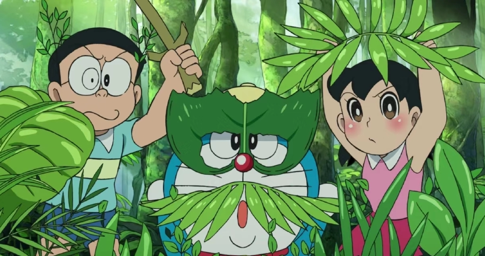
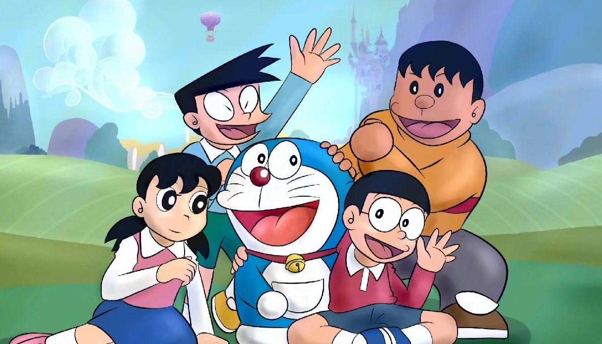

1969年，著名日本漫画家藤子·F·不二雄（藤本弘）创作出圆脑袋、蓝身体、拥有神奇道具的百宝袋的哆啦A梦，在此之后，这个可爱的角色迅速窜红，享誉海内外，哆啦A梦也并未停止他前进的脚步成为最成功的漫画角色之一。

哆啦A梦更走入千家万户，带给所有的拥趸无数甜蜜美好的回忆。即使藤本弘老师去世后，哆啦A梦也并未停止他前进的脚步，他和大雄、静香、小夫、胖虎等好友哆啦A梦也并未停止他前进的脚步继续引领开始一次又一次的全新冒险。

2005年，TV动画版《哆啦A梦》第二作在中止一个月左右后重返荧屏，而与后期剧场版相呼应的全新且更贴近原著的画风则仿佛昭示着一个新时代的到来。毕竟我们最熟悉的朋友从未远去，他以更纯真的面孔回到我们的身边。